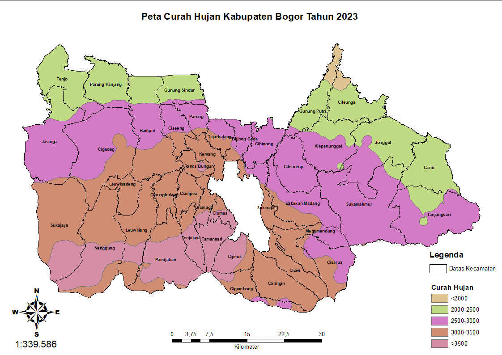

Hasil Penelitian: Tujuan 1
Memetakan kerawanan fisik alami tanah longsor berdasarkan faktor curah hujan, kemiringan lereng, jenis tanah, ketinggian, dan tutupan lahan.
Analisis Peta Parameter
1. Peta Curah Hujan
Peta curah hujan Kabupaten Bogor menunjukkan variasi yang beragam. Pada bagian selatan, terutama di daerah pegunungan (warna merah muda), curah hujan tercatat sangat tinggi, yaitu lebih dari 3500 mm/tahun. Bagian tengah (warna ungu) memiliki curah hujan normal antara 2500-3000 mm/tahun. Sementara itu, wilayah utara (warna hijau dan coklat muda) memiliki curah hujan lebih rendah, berkisar antara 2000-2500 mm/tahun (ringan) hingga di bawah 2000 mm/tahun (sangat rendah), menunjukkan daerah yang cenderung lebih kering.
2. Peta Kemiringan Lereng

Hasil pengolahan peta menghasilkan lima tingkat kemiringan: datar (0-2%), landai (2-15%), agak curam (15-25%), curam (25-40%), dan sangat curam (>40%), yang dibedakan dengan gradasi warna hijau ke merah. Wilayah pusat kota didominasi oleh kemiringan datar dan landai (hijau tua dan muda), yang stabil untuk pemukiman. Sebaliknya, wilayah di bagian selatan didominasi oleh lereng curam dan sangat curam (oranye dan merah), yang meningkatkan potensi risiko tanah longsor.
3. Peta Ketinggian Lahan

Peta ketinggian lahan dibagi menjadi tiga kelas: Datar (0-500 m), Bukit/Perbukitan (500-1000 m), dan Gunung/Pegunungan (>1000 m). Berdasarkan peta, sebagian besar wilayah Kabupaten Bogor didominasi oleh ketinggian lahan 0-500 m (warna kuning). Sementara itu, wilayah bagian selatan didominasi oleh ketinggian 500-1000 m hingga >1000 m (hijau dan merah), yang menunjukkan keberadaan pegunungan dan daerah dataran tinggi.
4. Peta Tutupan Lahan

Pada tahun 2023, sebagian besar wilayah Kabupaten Bogor berupa hutan dan perkebunan, yaitu mencakup 68,76%. Berdasarkan peta, area hutan dan perkebunan ini terkonsentrasi pada sebagian besar wilayah, terutama di bagian selatan yang merupakan daerah pegunungan.
5. Peta Jenis Tanah
Pada tahun 2023, wilayah Kabupaten Bogor didominasi oleh jenis tanah Latosol Haplik, Gleisol Eutrik, dan Kambisol Gleik (50,41%), yang tersebar di sebagian besar wilayah. Namun, pada bagian selatan, jenis tanah Litosol, Andosol Distrik, dan Singapan Batuan lebih mendominasi, sesuai dengan karakteristik wilayahnya yang berupa hutan dan pegunungan.
Kesimpulan Analisis
Berdasarkan hasil pengolahan, dihasilkan peta pada masing-masing parameter.
Kerawanan fisik alami tanah longsor di 435 desa Kabupaten Bogor yang dipetakan dengan kondisi dominan sebagai berikut. 187 desa dengan curah hujan kategori lebat (3000-3500 mm/tahun); 323 desa dengan kemiringan lereng kategori landai (2-15%); 347 desa dengan ketinggian pada kategori datar (0-500 m) 294 desa dengan tutupan lahan kategori hutan dan perkebunan; 325 desa dengan jenis tanah latosol haplik, gleisol eutrik, dan kambisol gleik.